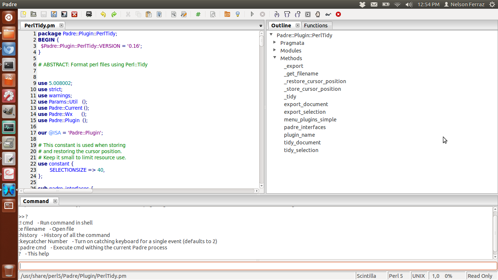
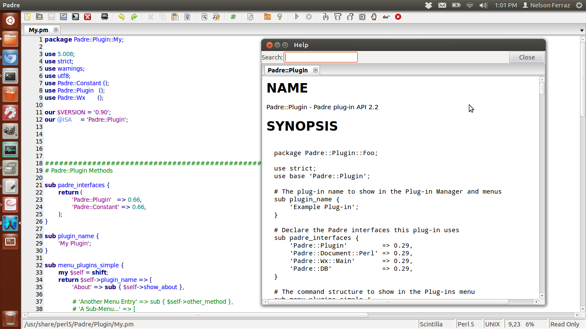
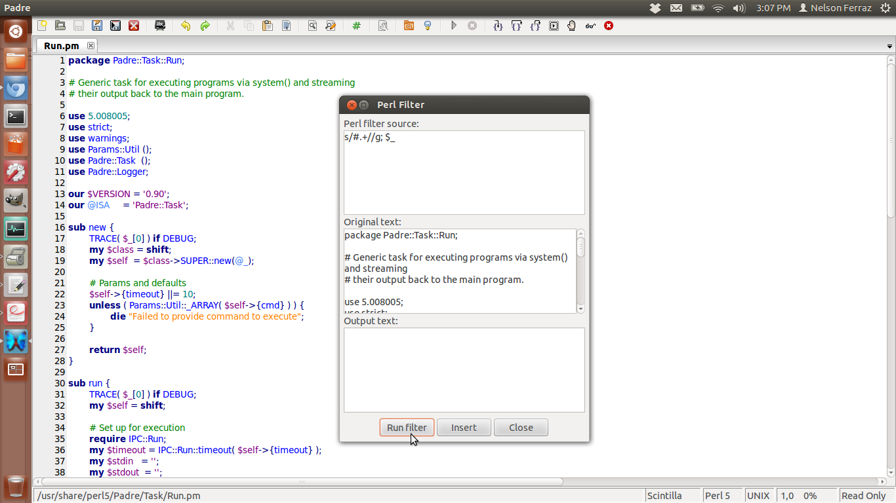
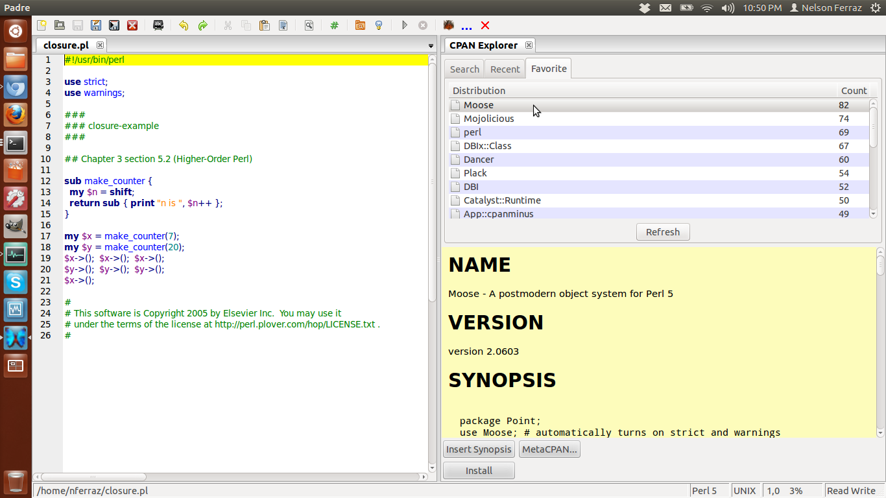
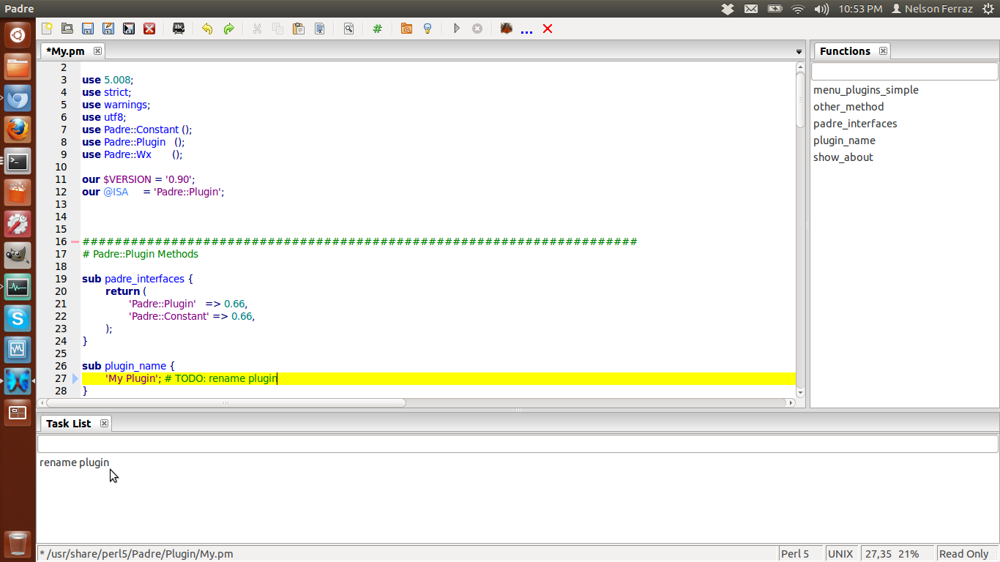

Screenshots
See Padre in action

Plugins
Extend Padre with plugins written in Perl

Documentation
Documentation is one click away

Text manipulation
Need more than search & replace? Run your source code through Perl!

CPAN Explorer
Explore and install modules

Text manipulation
Convenient list extracted from the TODOs and FIXMEs in your code